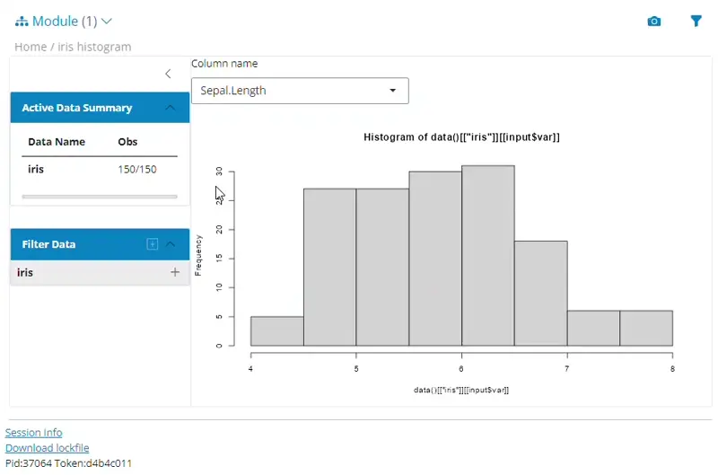

teal is a shiny-based interactive exploration framework for analyzing data. teal applications require app developers to specify:
- Data, which can be:
- CDISC data, commonly used for clinical trial reporting
- Independent datasets, for example from a
data.frame - Related datasets, for example a set of
data.frameswith key columns to enable data joins -
MultiAssayExperimentobjects which areRdata structures for representing and analyzing multi-omics experiments
-
tealmodules:-
teal modulesareshinymodules built within thetealframework that specify analysis to be performed. For example, it can be a module for exploring outliers in the data, or a module for visualizing the data in line plots. Although these can be created from scratch, manytealmodules have been released and we recommend starting with modules found in the following packages:-
teal.modules.general: general modules for exploring relational/independent/CDISC data -
teal.modules.clinical: modules specific to CDISC data and clinical trial reporting -
teal.modules.hermes: modules for analyzingMultiAssayExperimentobjects
-
-
A lot of the functionality of the teal framework derives from the following packages:
-
teal.data: creating and loading the data needed fortealapplications. -
teal.widgets:shinycomponents used withinteal. -
teal.slice: provides a filtering panel to allow filtering of data. -
teal.code: handles reproducibility of outputs. -
teal.logger: standardizes logging withintealframework. -
teal.reporter: allowstealapplications to generate reports.
Installation
install.packages("teal")
# install.packages("pak")
pak::pak("insightsengineering/teal@*release")Alternatively, you might also use the development version.
install.packages("teal", repos = c("https://pharmaverse.r-universe.dev", getOption("repos")))
# install.packages("pak")
pak::pak("insightsengineering/teal")Usage
library(teal)
app <- init(
data = teal_data(iris = iris),
modules = list(
module(
label = "iris histogram",
server = function(input, output, session, data) {
updateSelectInput(session = session,
inputId = "var",
choices = names(data()[["iris"]])[1:4])
output$hist <- renderPlot({
req(input$var)
hist(x = data()[["iris"]][[input$var]])
})
},
ui = function(id) {
ns <- NS(id)
list(
selectInput(inputId = ns("var"),
label = "Column name",
choices = NULL),
plotOutput(outputId = ns("hist"))
)
}
)
)
)
shinyApp(app$ui, app$server)

App recording
Please see teal.gallery and TLG Catalog to see examples of teal apps.
Please start with the “Technical Blueprint” article, “Getting Started” article, and then other package vignettes for more detailed guide.
Getting help
If you encounter a bug or have a feature request, please file an issue. For questions, discussions, and updates, use the teal channel in the pharmaverse slack workspace.